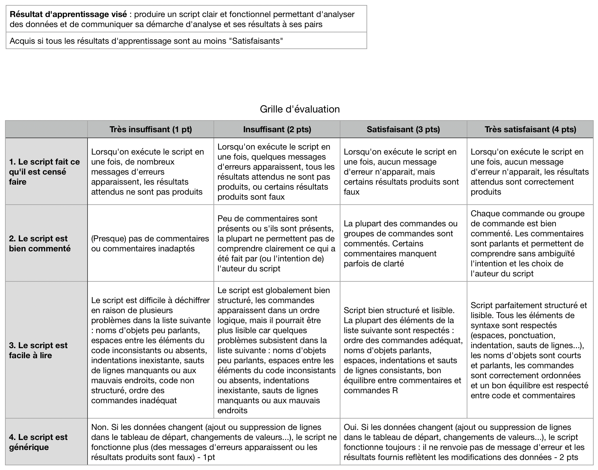

Introduction
Objectifs
Ce livre contient l’ensemble du matériel (contenus, exemples, exercices…) nécessaire à la réalisation des travaux pratiques de Biométrie de l’EC ‘Outils pour l’étude et la compréhension du vivant 4’ du semestre 5 de la licence Sciences de la Vie de La Rochelle Université.
À la fin du semestre, vous devriez être capables de faire les choses suivantes dans le logiciel RStudio :
- Explorer des jeux de données en produisant des résumés statistiques de variables de différentes nature (numériques continues ou catégorielles) et en produisant des graphiques appropriés
- Calculer des statistiques descriptives (moyennes, médianes, quartiles, écart-types, variances, erreurs standard, intervalles de confiance, etc.) pour plusieurs sous-groupes de vos jeux de données, et les représenter sur des graphiques adaptés
- Choisir et formuler des hypothèses adaptées à la question scientifique posée (hypothèses bilatérales ou unilatérales)
- Choisir les tests statistiques permettant de répondre à une question scientifique précise selon la nature de la question posée et la nature des variables à disposition
- Réaliser les tests usuels de comparaison de proportions et de moyennes (\(\chi^2\), \(t\) de Student à 1 ou 2 échantillons, appariés ou indépendants, etc.)
- Vérifier les conditions d’application des tests, et le cas échéant, réaliser des tests non paramétriques équivalents
- Interpréter correctement les résultats des tests pour répondre aux questions scientifiques posées
- Identifier des cohortes dans une population et en étudier les caractéristiques et l’évolution temporelle
- Simuler le comportement de populations théoriques simples suivant des modèles démographiques précis (mortalité exponentielle, croissance exponentielle, croissance logistique, système prédateur-proies de Lotka et Volterra, et systèmes de compétition à 2 ou 3 espèces…)
- Simuler, par chaînes de Markov, les successions écologiques dans un écosystème théorique
Pré-requis
Pour atteindre les objectifs fixés ici, et compte tenu du volume horaire restreint qui est consacré aux TP et TEA de Biométrie au S5, je suppose que vous possédez un certain nombre de pré-requis. En particulier, vous devriez avoir à ce stade une bonne connaissance de l’interface des logiciels R et RStudio, et vous devriez être capables :
- de créer un
Rprojectet un script d’analyse dansRStudio - d’importer des jeux de données issus de tableurs dans
RStudio - d’effectuer des manipulations de données simples (sélectionner des variables, trier des colonnes, filtrer des lignes, créer de nouvelles variables, etc.)
- de produire des graphiques de qualité, adaptés à la fois aux variables dont vous disposez et aux questions auxquelles vous souhaitez répondre.
- mettez-vous à niveau de toute urgence en lisant attentivement le livre en ligne de Biométrie du semestre 3
- mettez-vous en binôme avec un·e collègue qui a suivi l’EC Immersion
RetRStudioen début de semestre. Ça ne vous dispensera pas de lire le livre en ligne de Biométrie S3, mais ça vous fera certainement gagner pas mal de temps.
Organisation
Volume de travail
Les travaux pratiques et TEA de biométrie auront lieu entre le 17 octobre et le 02 décembre 2022 :
- Semaine 42 (du 17 au 21 octobre) : 1 séance de TP d’1h30 et 1 séance de TEA d’1h30
- Semaine 43 (du 24 au 28 octobre) : 1 séance de TP d’1h30 et 1 séance de TEA d’1h30
- Semaine 45 (du 07 au 10 novembre) : 1 séance de TP d’1h30 et 1 séance de TEA d’1h30
- Semaine 46 (du 14 au 18 novembre) : 1 séance de TP d’1h30 et 1 séance de TEA d’1h30
- Semaine 47 (du 21 au 25 novembre) : 1 séance de TP d’1h30 et 1 séance de TEA d’1h30
- Semaine 48 (du 28 novembre au 02 décembre) : 1 séance de TP d’1h30 et 1 séance de TEA d’1h30
Tous les TP ont lieu en salle MSI 217. Tous les TEA sont à distance.
Au total, chaque groupe aura donc 6 séances de TP et 6 séances de TEA, soit un total de 18 heures prévues dans vos emplois du temps. C’est peu pour atteindre les objectifs fixés et il y aura donc évidemment du travail personnel à fournir en dehors de ces séances. J’estime que vous devrez fournir à peu près une vingtaine d’heures de travail personnel en plus des séances prévues dans votre emploi du temps. Attention donc : pensez bien à prévoir du temps dans vos plannings car le travail personnel est essentiel pour progresser dans cette matière. J’insiste sur l’importance de faire l’effort dès maintenant : vous allez en effet avoir des enseignements qui reposent sur l’utilisation de ces logiciels jusqu’à la fin du S6 (y compris pendant vos stage et, très vraisemblablement, dans vos futurs masters également). C’est donc maintenant qu’il faut acquérir des automatismes, cela vous fera gagner énormément de temps ensuite.
Modalités d’enseignement
Pour suivre cet enseignement vous pourrez utiliser les ordinateurs de l’université, mais je ne peux que vous encourager à utiliser vos propres ordinateurs, sous Windows, Linux ou MacOS. Lors de vos futurs stages et pour rédiger vos comptes-rendus de TP, vous utiliserez le plus souvent vos propres ordinateurs, autant prendre dès maintenant de bonnes habitudes en installant les logiciels dont vous aurez besoin tout au long de votre licence. Si vous n’avez pas suivi l’EC immersion et que les logiciels R et RStudio ne sont pas encore installés sur vos ordinateurs, suivez la procédure décrite ici. Si vous ne possédez pas d’ordinateur, manifestez vous rapidement auprès de moi car des solutions existent (prêt par l’université, travail sur tablette via RStudio cloud…).
L’essentiel du contenu de cet enseignement peut être abordé en autonomie, à distance, grâce à ce livre en ligne, aux ressources mises à disposition sur Moodle et à votre ordinateur personnel. Cela signifie que la présence physique lors de ces séances de TP n’est pas obligatoire.
Plus que des séances de TP classiques, considérez plutôt qu’il s’agit de permanences non-obligatoires : si vous pensez avoir besoin d’aide, si vous avez des points de blocage ou des questions sur le contenu de ce document ou sur les exercices demandés, alors venez poser vos questions lors des séances de TP. Vous ne serez d’ailleurs pas tenus de rester pendant 1h30 : si vous obtenez une réponse en 10 minutes et que vous préférez travailler ailleurs, vous serez libres de repartir !
De même, si vous n’avez pas de difficulté de compréhension, que vous n’avez pas de problème avec les exercices de ce livre en ligne ni avec les quizz Moodle, votre présence n’est pas requise. Si vous souhaitez malgré tout venir en salle de TP, pas de problème, vous y serez toujours les bienvenus.
Ce fonctionnement très souple a de nombreux avantages :
- vous vous organisez comme vous le souhaitez
- vous ne venez que lorsque vous en avez vraiment besoin
- celles et ceux qui se déplacent reçoivent une aide personnalisée
- vous travaillez sur vos ordinateurs
- les effectifs étant réduits, c’est aussi plus confortable pour moi !
Toutefois, pour que cette organisation fonctionne, cela demande de la rigueur de votre part, en particulier sur la régularité du travail que vous devez fournir. Si la présence en salle de TP n’est pas requise, le travail demandé est bel et bien obligatoire ! Si vous venez en salle de TP sans avoir travaillé en amont, votre venue sera totalement inutile puisque vous n’aurez pas de question à poser et que vous passerez votre séance à lire et suivre ce livre en ligne, choses que vous pouvez très bien faire chez vous. Vous perdrez donc votre temps, celui de vos collègues, et le mien. De même, si vous attendez la 4e semaine pour vous y mettre, vous irez droit dans le mur. Je le répète, outre les heures de TP/TEA prévus dans vos emplois du temps, vous devez prévoir au moins 20 heures de travail personnel supplémentaire.
Je vous laisse donc une grande liberté d’organisation. À vous d’en tirer le maximum et de faire preuve du sérieux nécessaire. Le rythme auquel vous devriez avancer est présenté dans la partie suivante intitulée “Progression conseillée”.
Utilisation de Slack
Outre les séances de permanence non-obligatoires, nous échangerons aussi sur l’application Slack, qui fonctionne un peu comme un “twitter privé”. Slack facilite la communication des équipes et permet de travailler ensemble. Créez-vous un compte en ligne et installez le logiciel sur votre ordinateur (il existe aussi des versions pour tablettes et smartphones). Lorsque vous aurez installé le logiciel, cliquez sur ce lien pour vous connecter à notre espace de travail commun intitulé L3 SV 22-23 / EC outils (ce lien expire régulièrement : faites moi signe s’il n’est plus valide).
Vous verrez que 3 “chaînes” sont disponibles :
- #général : c’est là que les questions liées à l’organisation générale du cours, des TP et TEA, des évaluations, etc. doivent être posées. Si vous ne savez pas si une séance de permanence a lieu, posez la question ici.
- #questions-rstudio : c’est ici que toutes les questions pratiques liées à l’utilisation de
RetRStudiodevront êtres posées. Problèmes de syntaxe, problèmes liés à l’interface, à l’installation des packages ou à l’utilisation des fonctions, à la création des graphiques, à la manipulation des tableaux… Tout ce qui concerne directement les logiciels sera traité ici. Vous êtes libres de poser des questions, de poster des captures d’écran, des morceaux de code, des messages d’erreur. Et vous êtes bien entendus vivement encouragés à vous entraider et à répondre aux questions de vos collègues. Je n’interviendrai ici que pour répondre aux questions laissées sans réponse ou si les réponses apportées sont inexactes. Le fonctionnement est celui d’un forum de discussion instantané. Vous en tirerez le plus grand bénéfice en participant et en n’ayant pas peur de poser des questions, même si elles vous paraissent idiotes. Rappelez-vous toujours que si vous vous posez une question, d’autres se la posent aussi probablement. - #questions-stats : C’est ici que vous pourrez poser vos questions liées aux méthodes statistiques ou aux choix des modèles de dynamique des populations. Tout ce qui ne concerne pas directement l’utilisation du logiciel (comme par exemple le choix d’un test ou des hypothèses nulles et alternatives, la démarche d’analyse, la signification de tel paramètre ou estimateur, le principe de telle ou telle méthode…) peut être discuté ici. Comme pour le canal #questions-rstudio, vous êtes encouragés à vous entraider et à répondre aux questions de vos collègues.
Ainsi, quand vous travaillerez à vos TP ou TEA, que vous soyez installés chez vous ou en salle de TP, prenez l’habitude de garder Slack ouvert sur votre ordinateur. Même si vous n’avez pas de question à poser, votre participation active pour répondre à vos collègues est souhaitable et souhaitée. Je vous incite donc fortement à vous entraider : c’est très formateur pour celui qui explique, et celui qui rencontre une difficulté a plus de chances de comprendre si c’est quelqu’un d’autre qui lui explique plutôt que la personne qui a rédigé les instructions mal comprises.
Ce document est fait pour vous permettre d’avancer en autonomie et vous ne devriez normalement pas avoir beaucoup besoin de moi si votre lecture est attentive. L’expérience montre en effet que la plupart du temps, il suffit de lire correctement les paragraphes précédents et/ou suivants pour obtenir la réponse à ses questions. J’essaie néanmoins de rester disponible sur Slack pendant les séances de TP et de TEA de tous les groupes. Cela veut donc dire que même si votre groupe n’est pas en TP, vos questions ont des chances d’être lues et de recevoir des réponses dès que d’autres groupes sont en TP ou TEA. Vous êtes d’ailleurs encouragés à échanger sur Slack aussi pendant vos phases de travail personnel.
Progession conseillée
Si vous avez suivi le document de prise en main de R et RStudio (lors de l’immersion ou lors d’une remise à niveau en autonomie), vous savez que pour apprendre à utiliser ces logiciels, il faut faire les choses soi-même, ne pas avoir peur des messages d’erreurs (il faut d’ailleurs apprendre à les déchiffrer pour comprendre d’où viennent les problèmes), essayer maintes fois, se tromper beaucoup, recommencer, et surtout, ne pas se décourager. J’utilise ce logiciel presque quotidiennement depuis plus de 15 ans et à chaque session de travail, je rencontre des messages d’erreur. Avec suffisamment d’habitude, on apprend à les déchiffrer, et on corrige les problèmes en quelques secondes. Ce livre est conçu pour vous faciliter la tâche, mais ne vous y trompez pas, vous rencontrerez des difficultés, et c’est normal. C’est le prix à payer pour profiter de la puissance du meilleur logiciel permettant d’analyser des données, de produire des graphiques de qualité et de réaliser toutes les statistiques dont vous aurez besoin d’ici la fin de vos études et au-delà.
Pour que cet apprentissage soit le moins problématique possible, il convient de prendre les choses dans l’ordre. C’est la raison pour laquelle les chapitres de ce livre doivent être lus dans l’ordre, et les exercices d’application faits au fur et à mesure de la lecture.
Idéalement, voilà les étapes que vous devriez avoir franchi chaque semaine :
La première semaine (42) est consacrée l’exploration statistique des jeux de données. Avant votre seconde séance de TP, vous devriez avoir compris comment calculer et interpréter des résumés statistiques de vos jeux de données. Vous devriez en particulier être capable de calculer des estimateurs de position (moyennes, médianes, quartiles…) et de dispersion (variances, écart-types, intervalles inter-quartiles…) sur des variables numériques, et ce, pour plusieurs modalités d’une variable catégorielle ou pour chaque combinaison de modalités de plusieurs variables catégorielles (par exemple, quelles sont les moyennes et variances des longueurs de becs pour chaque espèce de manchots et chaque sexe). Vous devrez être capables de distinguer la notion de dispersion de celle de précision, et vous devrez être capables de calculer l’erreur standard de la moyenne (ou erreur type). Vous devrez en outre être capables de produire des graphiques sur lesquels apparaissent des barres d’incertitude (erreurs standards ou intervalles de confiance).
La deuxième semaine (43) est consacrée aux tests statistiques. Avant votre troisième séance de TP, vous devriez être capable de formuler des hypothèses nulles et alternatives pertinentes, et vous devriez connaître le concept de \(p-\)value. Vous devriez en outre être capables, avec des données de comptages, de réaliser des tests de comparaison de proportions, et d’en interpréter correctement les résultats.
La troisième semaine (45) est également consacrée aux tests d’hypothèses. Avant votre quatrième séance de TP, vous devriez être capable de comparer la moyenne d’une population à une valeur théorique, et de comparer la moyenne de 2 populations, dans le cas où vous disposez d’échantillons appariés. Dans les deux cas, vous devrez être capable de vérifier les conditions d’application des tests paramétriques, et de choisir des tests non-paramétriques équivalents si les conditions d’application ne sont pas vérifiées.
La quatrième semaine (46) est consacrée aux derniers tests de comparaison de moyennes. Avant votre cinquième séance de TP, vous devrez donc être capable de comparer la moyenne de deux populations lorsque les échantillons sont indépendants. Comme pour la semaine précédente, vous devrez être capable de vérifier les conditions d’application du test paramétrique, et de réaliser le tests non paramétrique équivalent le cas échéant. Enfin, vous devrez aussi être en mesure de spécifier les hypothèses alternatives unilatérales ou bilatérales pertinentes selon la question scientifique posée. Pour chaque semaine consacrée aux tests, vous devrez aussi toujours penser à examiner les données graphiquement, et par le biais des statistiques descriptives décrites lors de la première semaine
La cinquième semaine (47) est consacrée à la mise en pratique des notions vues dans le cours magistral de Population Dynamics (EC “Fonctionnement des Écosystèmes). Nous aborderons ici les analyses de cohorte. Avant votre dernière séance de TP, vous devriez être en mesure de réaliser l’analyse de cohorte d’une population étudiée pendant plusieurs années afin de produire les courbes de croissance, de survie et d’Allen d’une cohorte d’intérêt. Vous devrez en particulier importer et mettre en forme des données issues d’un suivi de terrain, produire les structures démographiques instantanées à chaque date d’échantillonnage, faire les décompositions polymodales afin de récupérer les informations utiles au sujet de la cohorte dont on souhaite assurer le suivi.
La sixième semaine (48) est consacrée à la mise en pratique des notions vues dans le cours magistral de Population Dynamics (EC “Fonctionnement des Écosystèmes). Nous aborderons ici l’étude des systèmes dynamiques. Vous devrez coder différents modèles d’évolution d’une populations (mortalité exponentielle, croissance exponentielle, croissance logistique) ou de plusieurs populations ou espèces (modèle prédateurs-proies, modèle de compétition). Ces modèles généreront des données que vous devrez représenter graphiquement. Vous devrez enfin modifier la valeur de certains paramètres de ces modèles afin de comprendre leur influence sur le comportement des systèmes dynamiques étudiés.
Évaluation(s)
L’évaluation de la partie “Biométrie” de l’EC “Outils pour l’étude et la compréhension du vivant” aura lieu dans le cadre du travail de stratégie d’échantillonnage que vous mettez en œuvre avec Pierrick Bocher. Le compte-rendu de stratégie d’échantillonnage servira donc à évaluer 3 choses :
- les grands principes de stratégie d’échantillonnage abordés par Pierrick
- la mise en œuvre de méthodes statistiques adaptées pour répondre aux questions scientifiques posées, telles que nous les traitons en Biométrie
- la maîtrise du logiciel
RStudiopour réaliser les analyses de données pertinentes (de l’importation des données et leur mise en forme dans le logiciel, à la réalisation et l’interprétation correcte des tests statistiques appropriés, en passant par l’exploration des statistiques descriptives et la création de graphiques informatifs). Pour ce dernier volet, vous devrez rendre, en plus de votre compte-rendu, votre script d’analyse. C’est ce script qui me permettra d’évaluer votre niveau de compétence et de maîtrise de l’outil, tant sur la forme du script (lisibilité, structure, reproductibilité, etc.) que sur le fond (pertinence des analyses réalisées).
Pour vous aider à comprendre ce qui est attendu, je vous fournis ci-dessous la grille critériée dont je me servirai pour évaluer la forme de votre script. Je ne peux que vous encourager à lire attentivement les critères d’évaluation ci-dessous et à tenter de vous les approprier. Les séances de TP et de TEA qui viennent doivent vous permettre de vous entraîner à produire des scripts de qualité.

Pour ce qui est du fond (pertinence des analyses statistiques réalisées et de leurs interprétations), une autre grille critériée sera fournie ici avant la fin du semestre.